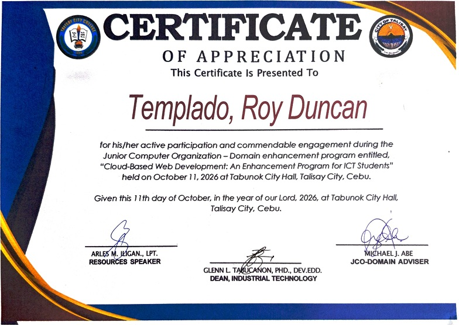
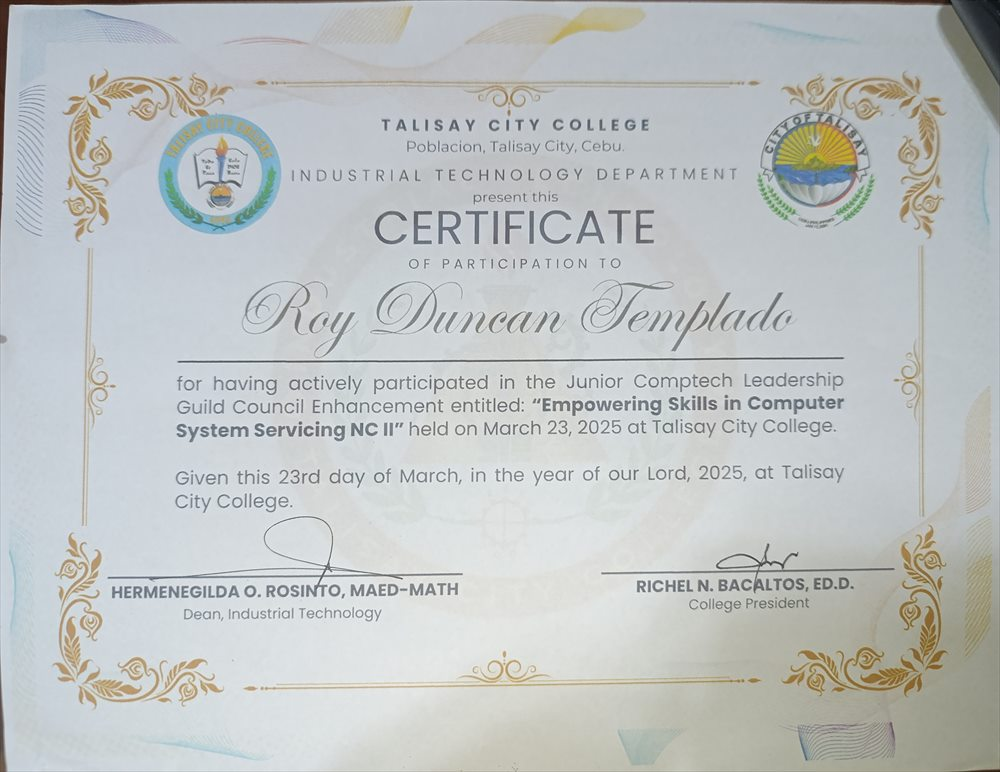
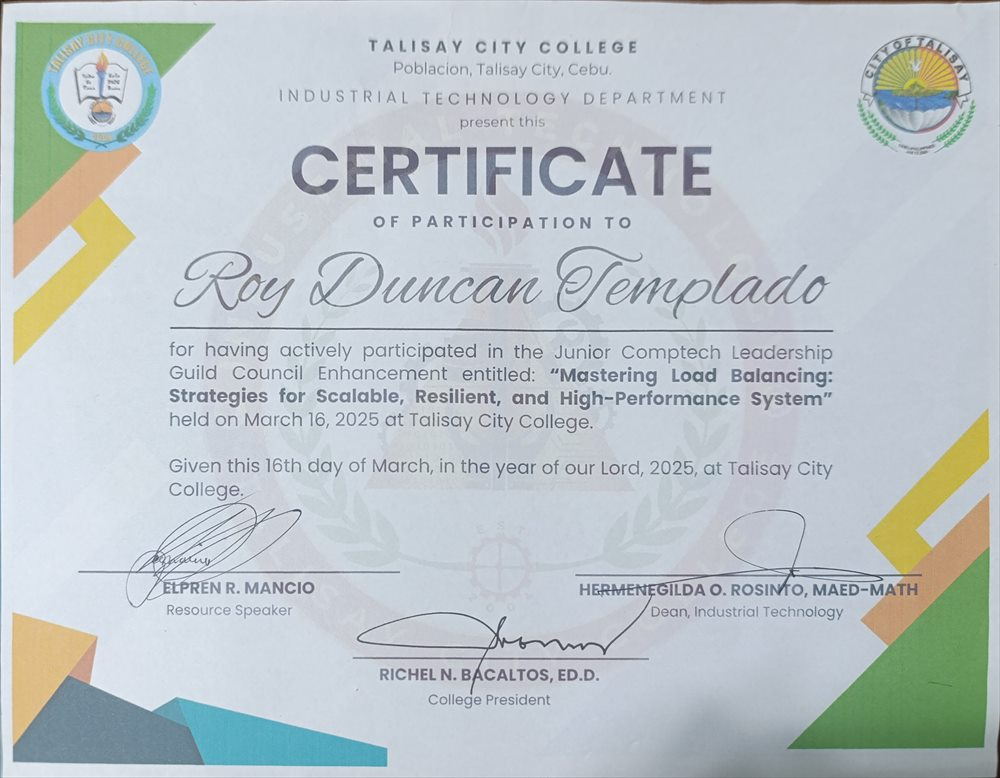
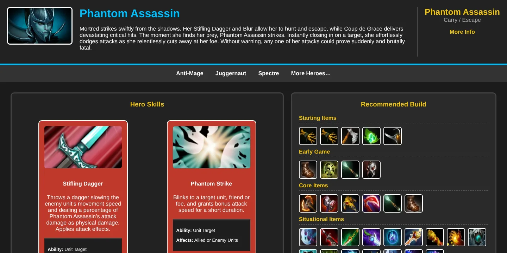
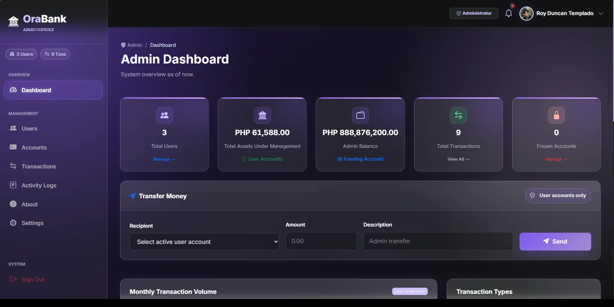
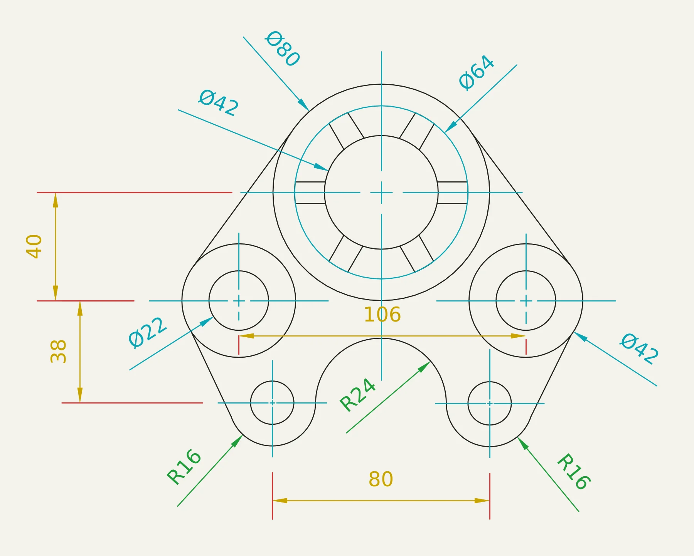

01
INDUSTRIAL TECHNOLOGY STUDENT
Hi, I’m Roy Duncan, an IT student exploring the art of turning ideas into useful digital experiences.
curiousbynature.
01 / ABOUT ME
✳Learning the
logic behind
the pixels.
I’m pursuing a Bachelor of Industrial Technology, majoring in Computer Technology, and enjoy learning how technology works by building with it.
My studies have given me experience with basic networking, AutoCAD, SolidWorks, and C and Java programming. I’ve also learned the fundamentals of HTML, CSS, and JavaScript.
I’m hardworking and curious, and I’m always ready to learn something new and put it into practice.
A little more about me ↗✳
GOOD WORK TAKES
CURIOSITY + PRACTICE
02 / MY TOOLKIT
A WORK IN PROGRESS — ALWAYSTools I use
to make things.
I am enthusiastic about technology and enjoy learning how different tools can bring ideas to life. I am still building my skills through practice and projects, and I look forward to exploring new programming languages and learning more along the way.
02
Frameworks & UI
▤03
Tools & platforms
⌘04
Other tools
⚙DEVELOP A PASSION FOR LEARNING TO KEEP GROWING.
03 / MILESTONES
LEARNING, RECOGNIZEDProof of
progress.
Courses, certificates, and milestones that mark what I’ve learned so far.
National Certificate II
Computer Systems Servicing · TESDA · August 20, 2026

Cloud-Based Web Development: An Enhancement Program for ICT Students
Appreciation · Junior Computer Organization · October 11, 2026

Empowering Skills in Computer System Servicing NC II
Participation · Talisay City College · March 23, 2025

Mastering Load Balancing: Strategies for Scalable, Resilient, and High-Performance System
Participation · Talisay City College · March 16, 2025
04 / SELECTED WORK
SMALL STEPS. REAL PROJECTS.Things I’ve
put together.
Class projects and ideas that made me dive deeper into technology and design.
FIRST WEB PROJECT

CLASS PROJECT · OCTOBER 2025
↗Empathy — Phantom Assassin Guide
A Dota 2 hero guide featuring Phantom Assassin’s skills, recommended item builds, and pro-player builds.
My first web development project, built by hand in HTML and CSS in VS Code using lessons from my professor, without AI-generated code.
HTMLCSSVisual Studio Code
BANKING ADMIN CONSOLE

FULL-STACK WEB APP · JULY 2026
↗OraBank — Banking Admin Console
A banking web app with admin and user dashboards, account management, and transaction flows.
My second project and the first time learning PHP. I explored backend development with help from Claude and GitHub Copilot, then hosted it on InfinityFree.
HTMLCSSJavaScriptPHPSQLInfinityFree
RESEARCH PROTOTYPE · OCTOBER 2026
↗
M.I.M.S. — Maintenance Inventory Management System
A proposed system for the Maintenance Department at Talisay City College, developed with a classmate as a research project. It helps staff track supplies, monitor low stock, process borrowing and returns, and review reports and activity logs.
Built with PHP and MySQL, alongside HTML, CSS, JavaScript, Bootstrap, PDO, and Chart.js, with AI assistance from Claude Code.
HTML5CSS3JavaScriptBootstrap 5PHP 8.1+MySQL / MariaDBPDOChart.jsXAMPPClaude Code
AUTOCAD DRAWINGS

PRACTICAL EXAM · AUTOCAD
↗
AutoCAD — 2D Drafting Practical Exam
Dimensioned 2D drawings made in AutoCAD, with centerlines, tangent arcs, and diameter, radius, linear, and angular dimensions.
My output for the practical exam in my Bachelor of Industrial Technology course, showing drafting skills in geometry, layers, and dimensioning. Tap the arrow or the drawing above to browse all five.
AutoCAD2D DraftingDimensioning
MORE IDEAS ARE TAKING SHAPE ✳
05 / YOUR TURN
HAVE A QUESTION, IDEA, OR OPPORTUNITY?Let’s make
something good.
Say hello Happy to chat about projects, learning, or what’s next.
royduncantemplado@gmail.com